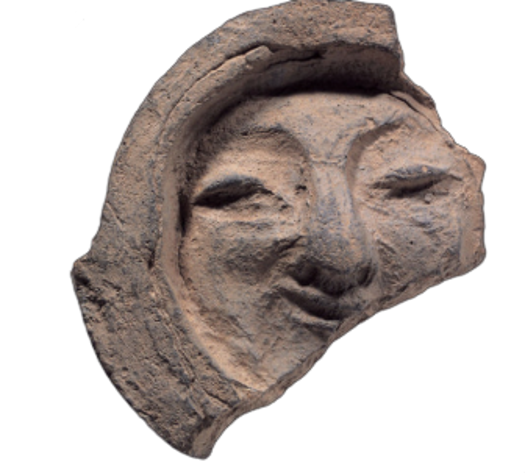
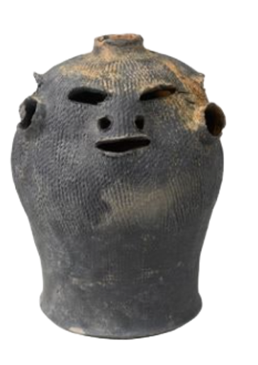
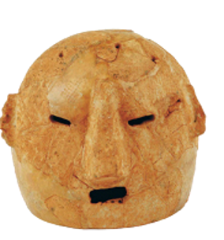

이미지 01 · 얼굴 조각
테두리 안의 얼굴
관찰 눈·코·입이 도드라진 얼굴과 이를 감싸는 곡선형 테두리가 보입니다. 표면은 거칠고 일부가 깨져 있습니다.

앗, 눈 마주쳤다.눈이 마주친 순간, 유물은 조금 덜 조용해집니다. 이 얼굴들은 누가 만들었을까요? 표정에 이름을 붙이기 전에, 먼저 천천히 바라봐요.
세 얼굴 만나기먼저 눈에 보이는 것을 살펴봅니다. 이미지가 알려주는 형태와, 아직 확인되지 않은 정보는 구분해 두었습니다.

관찰 눈·코·입이 도드라진 얼굴과 이를 감싸는 곡선형 테두리가 보입니다. 표면은 거칠고 일부가 깨져 있습니다.

관찰 둥근 몸체에 눈·코·입처럼 보이는 구멍과 돌출부가 있습니다. 표면에는 반복된 결이 보입니다.

관찰 둥근 황토색 표면에 가는 눈과 어두운 입 모양이 표현되어 있습니다. 얼굴 외곽은 비대칭으로 남아 있습니다.
※ 위 설명은 제공된 이미지에서 확인되는 시각적 특징만을 적었습니다. 유물의 정식 명칭과 세부 정보는 출처 대조가 필요합니다.
얼굴은 낯선 물건을 친근하게 만들기도 하고, 보는 이와 시선을 주고받는 존재처럼 느껴지게도 합니다. 이 이미지들만으로 제작자의 의도를 단정할 수는 없습니다. 대신 질문을 열어 둡니다.
얼굴의 위치와 표정, 재료의 흔적, 깨진 부분을 찾아보세요. 관찰은 해석의 출발점입니다.
장식이었을까요, 용기의 일부였을까요, 어떤 장소나 의례와 관련이 있었을까요? 이것은 가능한 질문이지 확인된 사실은 아닙니다.
정식 유물명, 발굴 맥락, 소장처의 설명, 제작 시기와 재질을 확인하면 해석을 더 단단하게 할 수 있습니다.
세 유물은 국립진주박물관, 국립경주박물관, 경산박물관에 각각 소장되어 있습니다.
국립중앙박물관이 운영하는 소장품 통합 검색 서비스입니다. 소장처와 유물명을 확인할 수 있습니다.
현재 제공된 이미지와 개별 유물의 일치 여부는 확인되지 않았습니다.